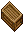
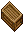
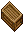
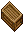

ただし、木箱は未施錠で、向きは右画像のもの限る。
 →  → 
→  → | 罠の種類 | Dart trap | Poison trap | Explosion trap |
| 必要スキル | 30.0 | 30.0 | 55.0 |
| 30.0〜39.9 | (5〜15)×3 ＝15〜45(物理) |
Level1の毒 lesser poison |
― |
| 40.0〜49.9 | (5〜15)×4 ＝20〜60(物理) |
Level2の毒 normal poison |
― |
| 50.0〜59.9 | (5〜15)×5 ＝25〜75(物理) |
(10〜30)×5 ＝50〜150(炎) |
|
| 60.0〜69.9 | (5〜15)×6 ＝30〜90(物理) |
Level3の毒 greater poison |
(10〜30)×6 ＝60〜180(炎) |
| 70.0〜79.9 | (5〜15)×7 ＝35〜105(物理) |
(10〜30)×7 ＝70〜210(炎) |
|
| 80.0〜89.9 | (5〜15)×8 ＝40〜120(物理) |
Level4の毒 deadly poison |
(10〜30)×8 ＝80〜240(炎) |
| 90.0〜99.9 | (5〜15)×9 ＝45〜135(物理) |
(10〜30)×9 ＝90〜270(炎) |
|
| 100.0 | (5〜15)×10 ＝50〜150(物理) |
Level5の毒 lethal poison |
(10〜30)×10 ＝100〜300(炎) |